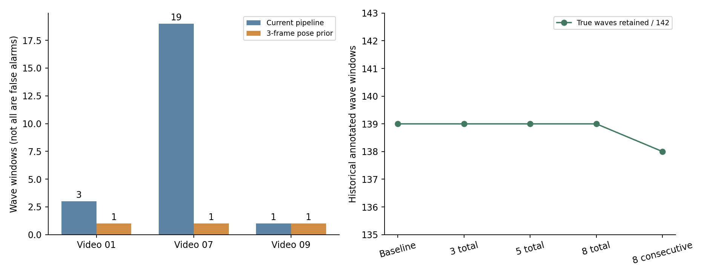
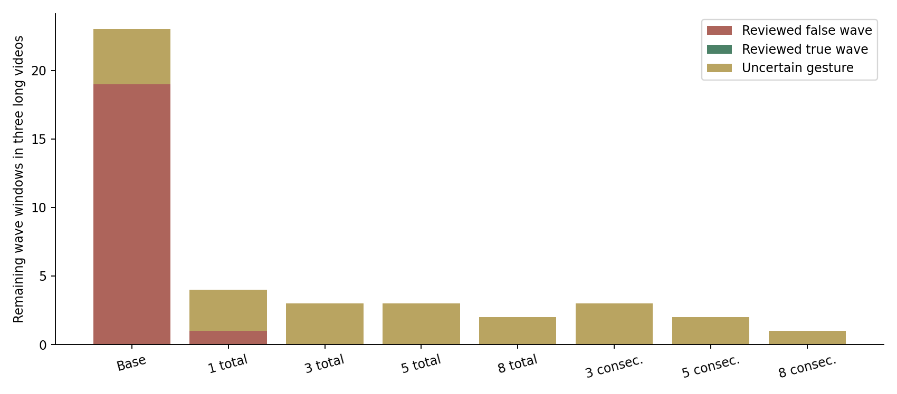

挥手：同一腕高于双肩，累计至少3帧
物体检测沿用正式7类；六模型及原四参数不变。仅在亮度门35以上检查同一人的可靠骨架，源帧去重。静止举手/喝水可能通过，不确定动作单列。候选已实现，正式包未替换。
详细结果 · 帧数对照 · 复现 · 候选入口及参数
下面均为完整配对输出。低亮旧片会跳过先验；同输入短片与完整长片不能重复计为独立样本。


long-videos/new-01
395.04秒；挥手窗 3 → 1
自动保存片段
long-videos/new-07
540.00秒；挥手窗 19 → 1
自动保存片段
long-videos/new-09
242.00秒；挥手窗 1 → 1
自动保存片段
short-regression/new-01
25.00秒；挥手窗 0 → 0
自动保存片段
short-regression/new-07
30.00秒；挥手窗 0 → 0
自动保存片段
short-regression/new-09
30.00秒；挥手窗 0 → 0
自动保存片段
wave-shorts/new-01-child-retained
12.00秒；挥手窗 1 → 1
自动保存片段
wave-shorts/new-01-wave-veto
12.00秒；挥手窗 1 → 0
自动保存片段
wave-shorts/new-07-standing-veto
12.00秒；挥手窗 2 → 0
自动保存片段
wave-shorts/new-09-raised-retained
12.00秒；挥手窗 1 → 1
自动保存片段
real-actiondata-all/挥手30.mp4
2.70秒；挥手窗 4 → 4
自动保存片段
real-actiondata-all/挥手33.mp4
2.60秒；挥手窗 4 → 4
自动保存片段
real-actiondata-all/挥手28.mp4
2.83秒；挥手窗 4 → 4
自动保存片段
real-actiondata-all/挥手29.mp4
2.90秒；挥手窗 3 → 3
自动保存片段
real-actiondata-all/挥手3.mp4
6.40秒；挥手窗 10 → 10
自动保存片段
real-actiondata-all/挥手12.mp4
5.20秒；挥手窗 9 → 9
自动保存片段
real-actiondata-all/挥手1.mp4
4.60秒；挥手窗 7 → 7
自动保存片段
全部挥手组审核（保留、过滤、待确认均展示）
long-videos-new-01-T44-G1-F574 — 儿童转身并摆臂，右腕确有短暂高于双肩；仅凭当前取样不能可靠区分招手与随意摆臂，保留待人工确认，不计已知误报。


long-videos-new-01-T658-G0-F6660 — 棕色衣服人物有前伸/指示手势，不能仅因手低于肩就判定不是挥手；暂列待确认，过滤不计作纠错。


long-videos-new-01-T815-G1-F8276 — 棕色衣服人物双手在身体下方，随行走轻摆，未见挥手。


long-videos-new-07-T237-G0-F2382 — 灰衣人物行走/站立，双手在腰部附近，没有挥手；3帧先验过滤。


long-videos-new-07-T311-G0-F3388 — 后方黑衣人物站立观看，未见挥手；前景遮挡时存在姿态归属不稳，已保留证据。


long-videos-new-07-T311-G1-F3664 — 黑衣人物站立，手位于腰背附近，未见挥手。


long-videos-new-07-T311-G1-F3703 — 黑衣人物站立及低位指示手势，未见招手摆动；右手靠近腰背。


long-videos-new-07-T321-G0-F3874 — 灰色上衣人物手部靠近脸/耳，继而放低；未见招手摆动。


long-videos-new-07-T559-G0-F6109 — 条纹衣背包人物站着观看并低位持物/操作手机；覆盖三次触发的完整上下文，未见挥手。


long-videos-new-07-T894-G0-F10049 — 灰西装人物抱臂站立，仅移动身体，未挥手。


long-videos-new-07-T913-G0-F10526 — 浅蓝衣人物双手背在身后站立，未挥手。


long-videos-new-07-T894-G0-F10727 — 灰西装人物伸手接/握牵引带，未作招手摆动。


long-videos-new-07-T942-G1-F10775 — 浅蓝衣人物双手背后站着观看，未挥手。


long-videos-new-07-T894-G2-F11201 — 浅蓝衣人物双手在胸前持手机观看/操作，未挥手。此轨迹ID和之前西装人物相同但generation不同，不视为同一身份。


long-videos-new-07-T966-G0-F11284 — 灰西装人物手持牵引带带机器人移动，覆盖两次触发及后续上下文，没有挥手。


long-videos-new-07-T992-G0-F11880 — 黑外套人物在该动作窗口内低头看手机、右臂自然垂下，未挥手；右手举起是475.9秒后的另一窗口，不能倒灌至本窗口。


long-videos-new-07-T992-G0-F11919 — 人物右手短暂举起作手势后放下，无法可靠区分招手与指示/点赞。腕关键点亦有偏移；暂列待确认，保留不计作真挥手或误挥手。


long-videos-new-09-T607-G0-F3466 — 白衣人物举手作引导/指示后放下；满足抬腕几何条件，但不能可靠区分引导手势与招手，暂列待确认。


wave-shorts-new-01-child-retained-T9-G1-F124 — 短片重启核对，同一原片动作：儿童转身并摆臂，右腕确有短暂高于双肩；仅凭当前取样不能可靠区分招手与随意摆臂，保留待人工确认，不计已知误报。


wave-shorts-new-01-wave-veto-T14-G0-F135 — 短片重启核对，同一原片动作：棕色衣服人物有前伸/指示手势，不能仅因手低于肩就判定不是挥手；暂列待确认，过滤不计作纠错。


wave-shorts-new-07-standing-veto-T23-G0-F132 — 短片重启核对，同一原片动作：灰衣人物行走/站立，双手在腰部附近，没有挥手；3帧先验过滤。


wave-shorts-new-09-raised-retained-T29-G0-F141 — 短片重启核对，同一原片动作：白衣人物举手作引导/指示后放下；满足抬腕几何条件，但不能可靠区分引导手势与招手，暂列待确认。


old-videos-1fa7b05d59e8d258-T1-G0-F29 — 旧挥手30：右手举起并往复挥动，与既有逐人标注一致，保留。

old-videos-220cc82202abab6e-T1-G0-F29 — 旧挥手33：左手举起并往复挥动，与既有逐人标注一致，保留。

old-videos-56f605e0ad40c73a-T1-G0-F29 — 挥手28.mp4：既有逐人标注为挥手，原图序列可见举手摆动，动作保留。

old-videos-92b9a42823e68e4e-T2-G0-F29 — 挥手29.mp4：既有逐人标注为挥手，原图序列可见举手摆动，动作保留。

old-videos-b576f320195dfed9-T2-G0-F24 — 挥手3.mp4：既有逐人标注为挥手，原图序列可见举手摆动，动作保留。本段原亮度低于35，先验跳过，不能算作先验能力通过。

old-videos-c99b19d78b33d718-T1-G0-F24 — 挥手12.mp4：既有逐人标注为挥手，原图序列可见举手摆动，动作保留。本段原亮度低于35，先验跳过，不能算作先验能力通过。

old-videos-d0ab8993eff23b00-T2-G0-F24 — 挥手1.mp4：既有逐人标注为挥手，原图序列可见举手摆动，动作保留。本段原亮度低于35，先验跳过，不能算作先验能力通过。